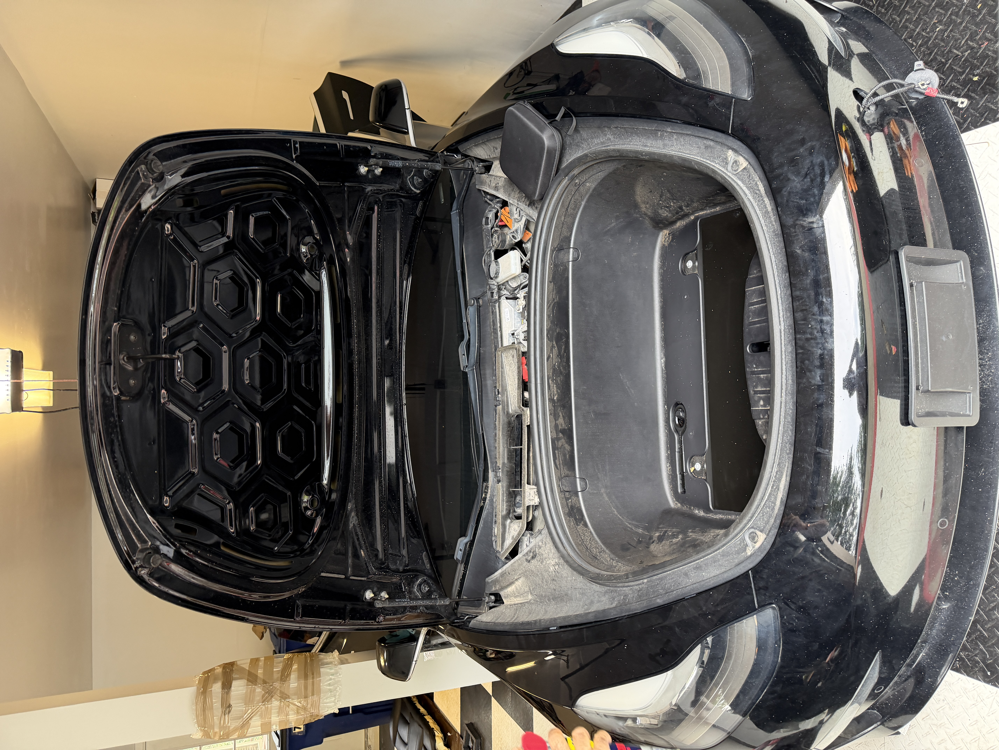
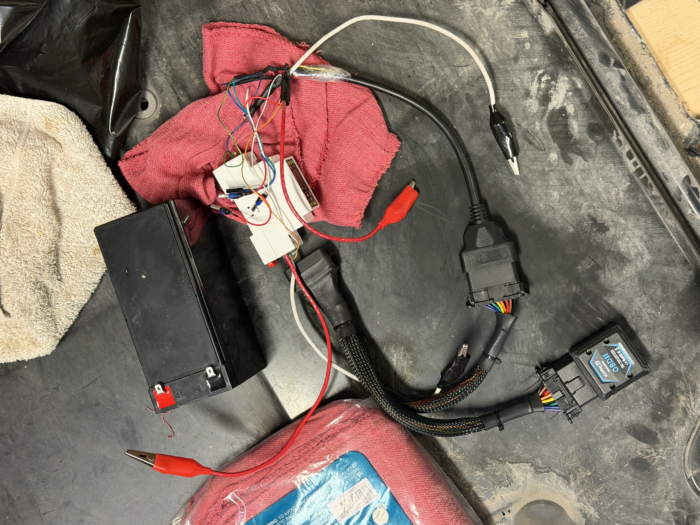
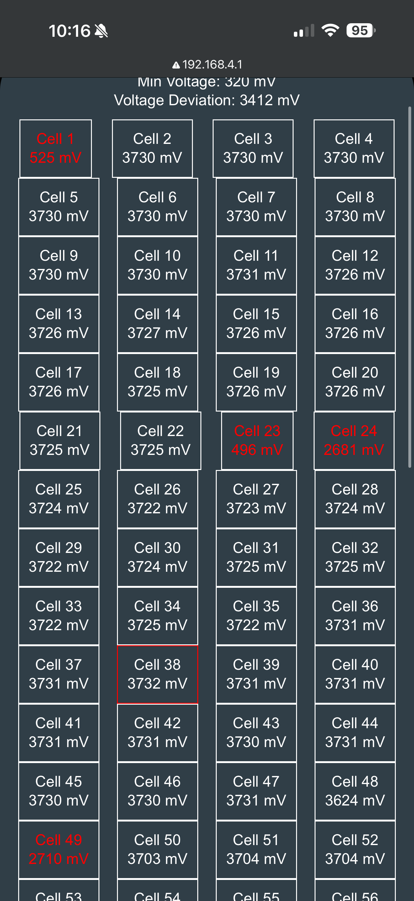
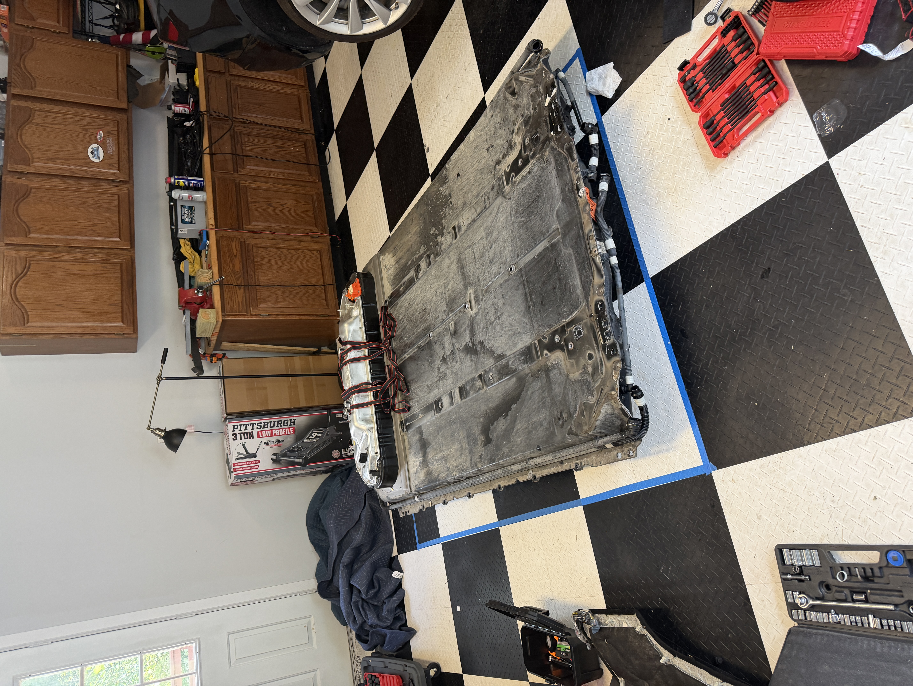
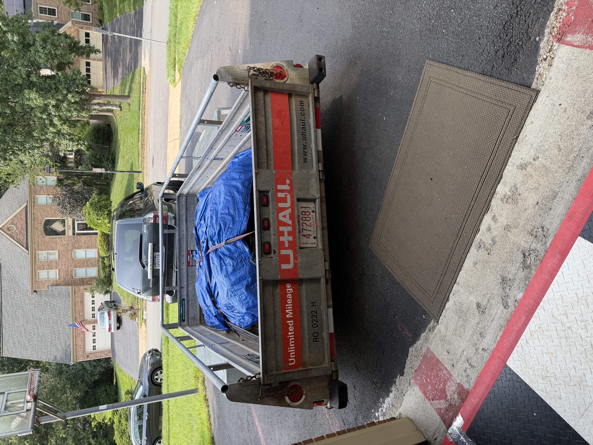

Tesla High-Voltage Battery Diagnostics & Repair
Diagnosed and repaired a non-running Tesla by analyzing high-voltage battery data through the vehicle's CAN bus.
Project Overview
I got a clean-title non-running 2018 Tesla Model 3 Dual Motor and performed a systematic diagnostic process to determine the source of the vehicle's failure. Using battery-level CAN bus data, I determined that multiple cells were extremely discharged with respect to the rest of the battery. Therefore, the easiest solution was to replace the HV battery.
CAN Bus Diagnostics

I connected a Waveshare ESP32 and bluetooth OBD2 scanner with the battery's data port. The pins connected were CAN high, CAN low, power supply pins, as well as 12V for the BMS. Everything was powered off of a 12V 7Ah lead-acid battery.
The ESP32 transmitted the battery telemetry over Wi-Fi, and the OBD2 scanner over bluetooth, allowing me to view diagnostic information directly from my phone.
Battery Analysis

With my diagnostic tools, I viewed the cell map of the battery, and identified multiple cells being extremely discharged. Since the voltage deviation was too high, the BMS would not let the contactors close. Additionally, the affected cells were in each module, making individual module replacements not realistic.
Battery Removal

Following Tesla's official service guide for battery removals, all necessary connections and bolts were undone, and it was rolled out from underneath the car.
Battery Replacement

After identifying the failed pack, I sourced a replacement high-voltage battery and installed it in the vehicle. The battery was tested using the same diagnostic tool, and it showed a healthy cell map and a low amount of total charging, most of it coming from DC.
I then completed the required post-replacement battery routines to return the vehicle to normal operation.
Final Repairs & Validation

I completed additional minor suspension work required for inspection and verified that the vehicle was ready to return to service.
Tools & Technologies
ESP32 • CAN Bus • OBD-II • Scan My Tesla • Battery Management Systems • Automotive Diagnostics